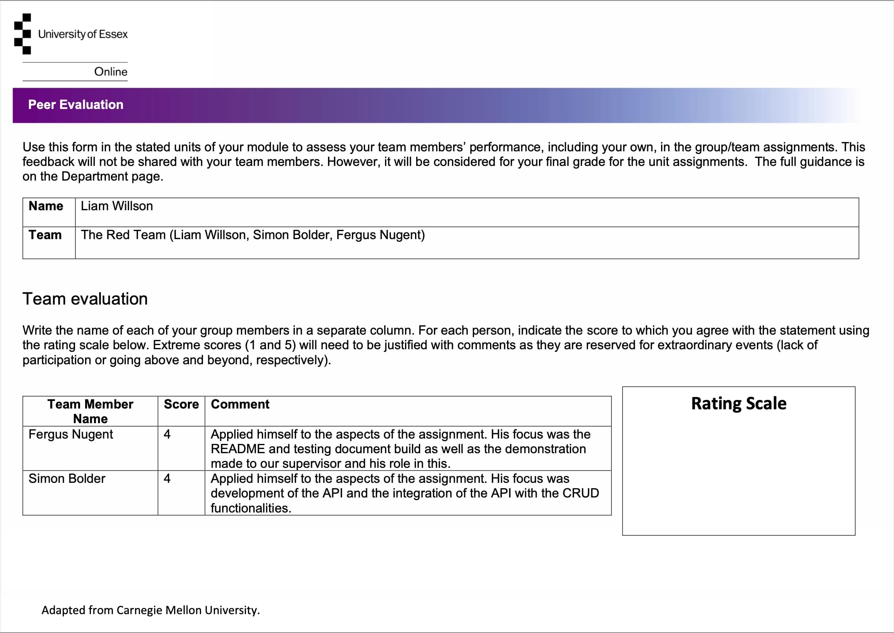
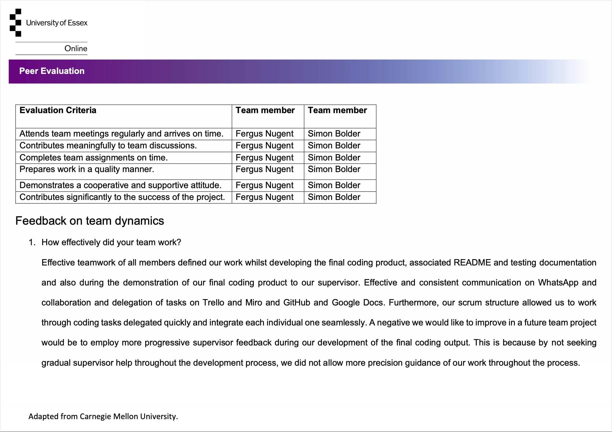
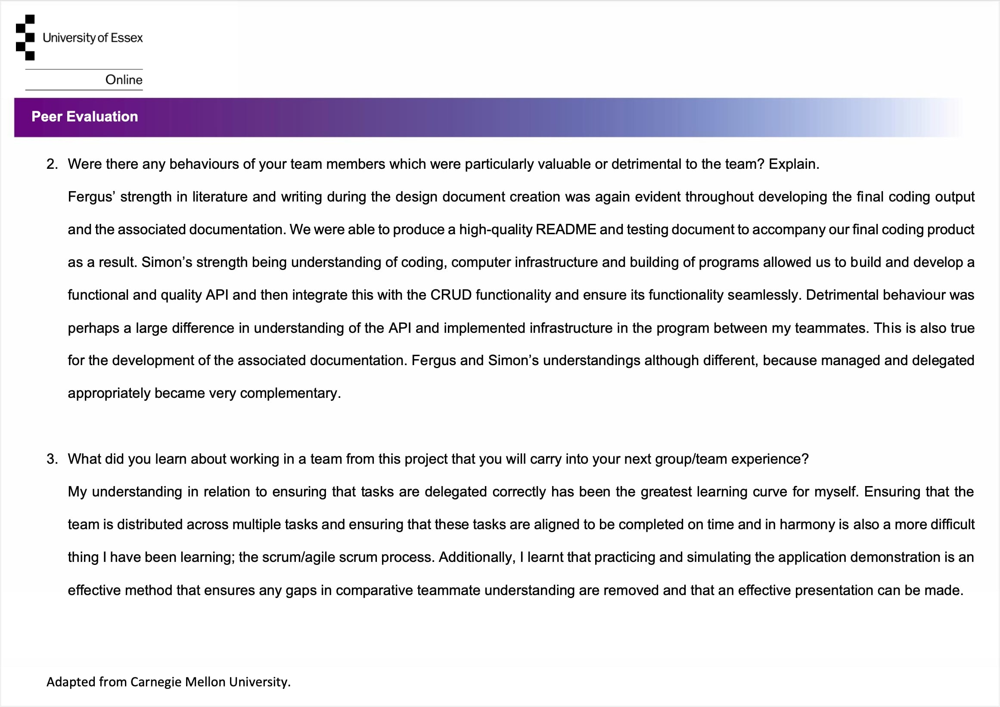
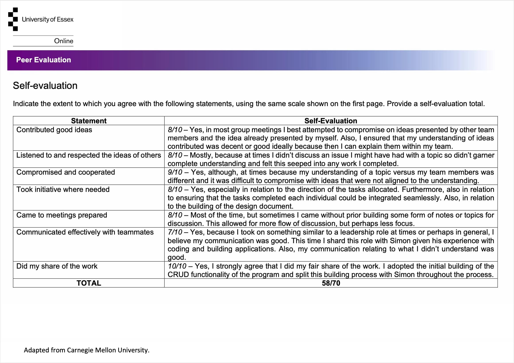
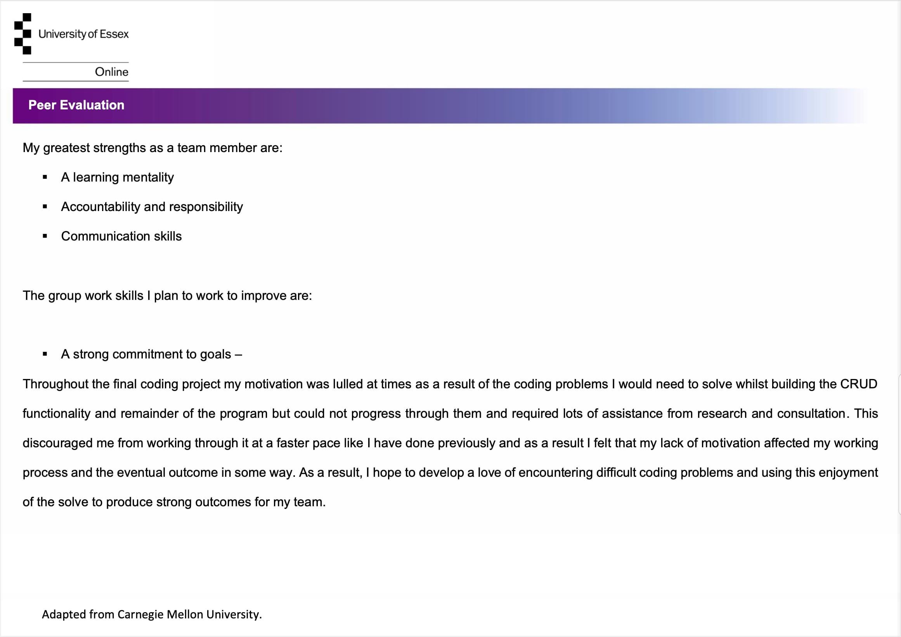
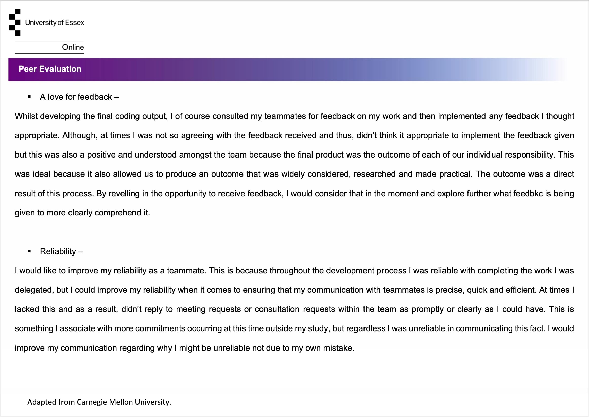
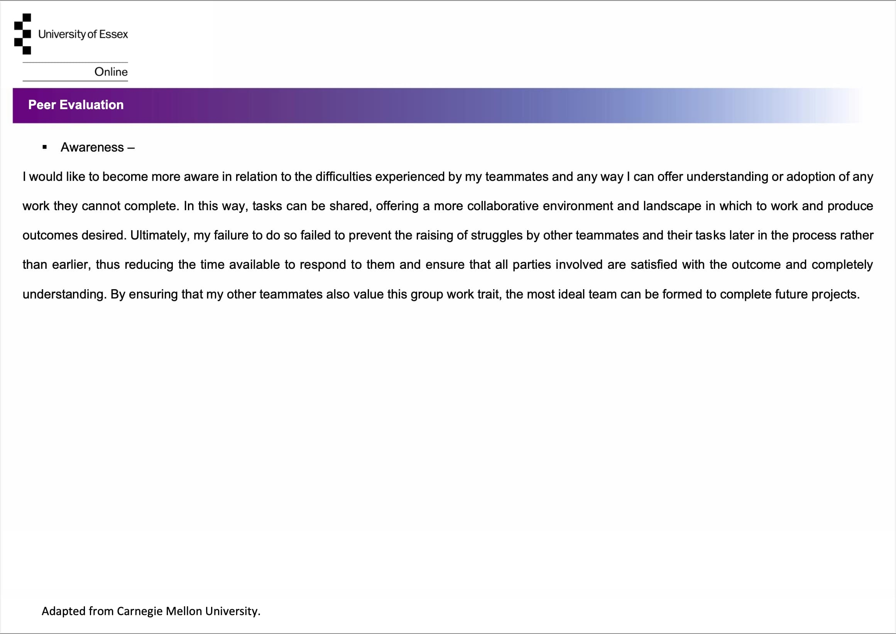
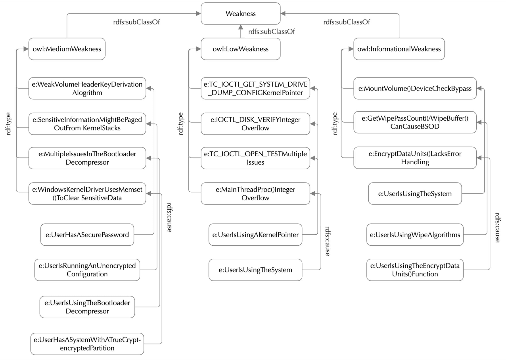

Teamwork & Collaboration Evidence
Explore the e-Portfolio Activities Using the Directory Below:
- Team Meetings & Rundown - Logs
- Team Contract
- Peer Review: Design Document
- Peer Review: Coding Output
- Collaborative Discussion #1
- Collaborative Discussion #2
-------------------------------------------------------------------------
Team Meeting Dates & Rundown - Logs
10th August 2023During this meeting, we introduced ourselves and our backgrounds, established rough timelines that we wished to respect and thus, our other commitments which we also need to respect and work in with the tasks to be completed by the team. Furthermore, we also outlined the expectations that each of us had for the process and from each other. Also, future meetings were scheduled and initial tasks of drafting a template and organising tools to be used was completed.
17th August 2023
During this meeting it was established that a well-planned and structured design document template had been completed. It was reviewed and feedback from garnered and pooled then actioned. All collaborative and working tools had been used at this point and put into effect. The design document was divided up into manageable tasks and these were delegated amongst the team members. It was defined what was to be completed by the next scheduled meeting and a collaborative GitHub repository was created.
24th August 2023
During this meeting, GitHub work on the final coding product was reviewed and discussed. Furthermore, it was confirmed that the assigned design document tasks delegated had been completed. They were reviewed and confirmed to ensure quality. Then, some of the remaining tasks for the design document were delegated and key turning point decisions were made regarding the design document.
31st August 2023
During this meeting, submission of the design document drafted to Dr People’s for review was discussed and agreed upon, then delegated. Issues regarding our understanding of certain aspects of what was required from the design document by Dr People’s were discussed. Then, these issues were structured into tangible descriptions and prepared for review by Dr People’s. Organisation issues regarding the collaborative tools being used were then rectified.
1st September 2023
During this meeting, Dr People’s review and comments on the design document were reviewed together and our understanding of them was discussed. Then, we delegated inputting and satisfying these comments to ensure that the design document would be completed in time for the assigned deadline. More preliminary work was reviewed which had been completed for the GitHub repository of the final code product.
7th September 2023
During this meeting, the design document was finalised and reviewed by all team members then final decisions made were confirmed and agreed by all team members, final design document was tasks were then delegated and the team members then agreed on a final finishing date by which the design document should be completed and ready for submission. Further work on the final coding product was continued and now represented the design document and was well directed.
14th September 2023
During this meeting, the design document was reviewed and realised as completed. Then a team member was delegated as the assigned submitter and a submission date was agreed. Once these topics were discussed, the peer review document to be submitted by each individual team member were then discussed. This allowed the team to provide feedback of each team member and visualise how the team had worked so far through the initial phase and prepare the team for moving onto the next deadlines to meet.
21st September 2023
The design document and accompanying peer review has been submitted. During this meeting, the team refocused the direction of the collaborative tools toward the completion of the final coding product and the testing and review documentation to accompany it. Tasks to continue developing the final coding product were delegated in line with the stipulations of the design document and the rough upcoming timeline to adhere to was defined. Furthermore, the upcoming commitments of the team members were defined to ensure that delegated tasks could be completed. A document that would be used to submit the testing and review of the final coding product was also created and structured.
28th September 2023
During this meeting coding tasks delegated and their progress were discussed and any errors whilst compleing these tasks were discussed and solutions shared. I was delegated building of the CRUD functionality of the program, the encryption and hashing of the password and building the JSON databases, Simon was delegated development of the API and its functionality and finally, Fergus had been delegated linting and testing of the program and development of the README and assocated documentation accompanying the program. These 3 spearheads were combined and discussed in conjunction and their future state considered.
5th September 2023
I discussed with my teammates the issues I was struggling with whilst developing the CRUD functionality of the program and also ensured that their issues were discussed in joint. This way we ensured that the progress of developing the program was to time and would thus be completed in time. This opportunity also allowed us to realise where each other's understanding stood in relation to our tasks delegated. The biggest issues discussed were the development of the API and the difficulty associated with ensuring that it would work in with the CRUD functionality eventually. The state of both developments is good and timely.
12th September 2023
During this meeting we merged the API, CRUD and encryption functionality to form a complete program that would allow a user to login with a unique username and password and then commit data to JSON files and all this can be overseen by administrators with use of the API. The API also provides the administrator user with an interactive UI which allows them to view logging of usage of the program and also review security failures or risks therefore. The user and administrator privileges are separate and separately made secure by security layers employed.
19th September 2023
Issues with the API were reviewed by Simon and then a discussion was had to ensure all team members were at the right level of understanding. This is because the development of the application was divided amongst the team members and therefore, the understanding of the different aspects of it were of differing levels. The most important reason for this was that it was done before the documentation for the application was built so that it could be built collaboratively.
26th September 2023
The writing of the README.md began and the it was discussed whether the documentation needed to be separated out into a README.md discussing the instructions regarding how to run the application and how to install the correct modules and a document discussing the testing and experimentation of the application. This discussion then allowed the team to collaborate on the structure of the README.md and the testing and experimentation documentation.
3rd October 2023
During this meeting the application was run as though it was being initialised as a public user and a list of problems and edits were created and then allocated for implementation. The tasks were allocated and the final product progress was coming along. A discussion was also had before end regarding the current allocation of effort by all team members and any disproportionate effort was rectified amongst all team members.
10th October 2023
No meeting was had to collaborate this week.
17th October 2023
After a final discussion with Dr Cathryn Peoples regarding the ongoing progress of the application build, we discussed implementing some addtional security features. These included, input time out when entering password, input sanitisation of integer and string inputs, uploading a file and other security features. This then allowed us to finalise the build and submit the final version the final full working version.
20th October 2023
During this meeting the final version of the application built and the accompanying documentation was all finalised. Then, the process of the demonstration was discussed and the roles that each team member would play. It was decided that to amximise the collaborative effort, I would begin and present the CRUD and CLI functionality, then Simon the API functionality and then Fergus the associated documentation. Any questions posed would be answered dependent on who had a confident answer. Finally, there would be an emphasis on the security funcitonality implemented.
25th October 2023
The demonstration of our application inclusive of the CRUD and API functionality was delivered on this date in the company of Dr Cathryn Peoples. This is following our complete submission made on the 23rd October 2023.
Team Contract -->
Peer Review: Design Document -->
Peer Review: Coding Output -->







Collaborative Discussion #1
Initial Post (in Unit 1)
The OWASP (2023) coding weakness I have focussed on in my discussion and represented using a UML flowchart is, Broken Access Control. I have utilised a use case diagram
to represent Broken Access Control because this OWASP weakness is defined as an instance of a malicious user story in which a user (attacker) is acting outside their
intended permissions and hence, mimicking administration or a higher-access level to assume their controls. Therefore, because a use case diagram captures the way in which users
of software interact and benefit from it, modelling Broken Access Control is most appropriate using a use case diagram (Common Weakness Enumeration, 2017; OWASP, 2023).
Although, modelling Broken Access Control using UML activity diagrams would also be appropriate because these particular UML models show the way in which events are executed
within a system over time. Because Broken Access Control requires an attacker to manipulate authorised access and this involves a sequence of malicious behaviours/activities, a
UML activity model will successfully present in-depth detail of the process (OWASP, 2023; Rumbaugh, Jacobson & Booch, 1999).
Furthermore, a UML sequence diagram has the potential to be a successful representation of Broken Access Control. This is because it would represent how messages are distributed
between objects and how an attacker could take advantage. Although, a UML sequence diagram would be the least ideal UML model to utilise because only the messages between objects
involved in authenticating a user would be represented. Before this the attacker has already gained access/control and is in a position to enact malicious intent (OWASP, 2023; Rumbaugh,
Jacobson & Booch, 1999).
References:
Common Weakness Enumeration (2017) CWE View: Weaknesses in OWASP Top Ten. Available from: https://cwe.mitre.org/data/definitions/1026.html
[Accessed 14 August 2023].
OWASP (2023) OWASP Top Ten. Available from: https://owasp.org/www-project-top-ten/ [Accessed 14 August 2023].
Rumbaugh, J., Jacobson, I. & Booch, G. (1999) The Unified Modelling Language Reference Manual. Addison Wesley Longman, Inc.
Appendix:
UML Use Case Model: OWASP (2023) Broken Access Control Weakness

Peer Response #1 (in Unit 2)
Thanks for your post.
I agree that a UML activity diagram well represents the behaviour of users and the system in the case of illustrating an instance of
Broken Access Control. I also appreciate the specification that your diagram illustrates, particularly the vulnerability occurrence as it
relates to Broken Access Control (Rumbaugh, Jacobson & Booch, 1999).
Although, I recommend that the ‘how’ an attacker (user) accessed the information to be able to bypass the authorisation check is included
in the diagram in some way. This would better illustrate the vulnerability of the system, even if the illustration is as simple as describing
that the authorisation requires merely input of the word ‘password’ or some other simple form of broken access. Upon analysing your illustration,
I have in turn realised mine own would benefit from a more specific illustration of the authorisation step.
Furthermore, I agree that a UML class diagram would not be effective in showing dynamic sequence of events that lead to security vulnerability
as it relates to Broken Access Control. Although, I disagree with the notion that a UML use case diagram would not be effective. A use case diagram
presents user stories as they refer to the users of the system (inclusive of malicious user; attackers). Security vulnerabilities are vulnerabilities
exploited by people. Therefore, I determine the importance of UML use case diagrams as high in representation of Broken Access Control because they
illustrate user interactions (Rumbaugh, Jacobson & Booch, 1999).
References:
Common Weakness Enumeration (2017) CWE View: Weaknesses in OWASP Top Ten. Available from: https://cwe.mitre.org/data/definitions/1026.html
[Accessed 14 August 2023].
OWASP (2023) OWASP Top Ten. Available from: https://owasp.org/www-project-top-ten/ [Accessed 14 August 2023].
Pillai, A. (2017) Software Architecture with Python. Birmingham, UK. Packt Publishing Ltd.
Rumbaugh, J., Jacobson, I. & Booch, G. (1999) The Unified Modelling Language Reference Manual. Addison Wesley Longman, Inc.
Peer Response #2 (in Unit 2)
Thanks for your post.
I enjoyed reading your post regarding an OWASP (2023) weakness I personally have not yet illustrated a diagram for. I appreciated your inclusion
of the ‘Log’ behaviour in your UML activity diagram and explanation of how the absence of logging at different steps of the activity process, as it
relates to the system, would be a weakness that leads to compromise of the system. Although, I would argue, what is the efficiency in logging every
single activity of the system at every step? I suggest that perhaps logging crucial intersections which are not bypassable would be more efficient as
it relates to logging information and more efficient as it relates to providing auditors and monitors with usable and meaningful data (Rumbaugh, Jacobson
& Booch, 1999).
I agree with your discussion that a UML use case diagram would be meaningful by illustrating how actors interact with the system and are prone to
or affected by the logging actions performed by the system. Furthermore, I believe that the activity diagram you have presented delivers a more
meaningful illustration versus a sequence diagram. This is because the most important focus of the diagram is the logging and the ‘noise’ in a
sequence diagram would deduct meaning from logging represented in the diagram. Furthermore, to this notion the current activity diagram you have
presented may benefit from highlighting the ‘Log’ steps (Rumbaugh, Jacobson & Booch, 1999).
References:
OWASP (2023) OWASP Top Ten. Available from: https://owasp.org/www-project-top-ten/ [Accessed 14 August 2023].
Pillai, A. (2017) Software Architecture with Python. Birmingham, UK. Packt Publishing Ltd.
Rumbaugh, J., Jacobson, I. & Booch, G. (1999) The Unified Modelling Language Reference Manual. Addison Wesley Longman, Inc.
Summary Post (in Unit 3)
I am writing this upon reviewing of my peer’s responses, receiving feedback myself and creating my own initial post and accompanying UML use case
diagram to discuss the OWASP (2023) coding weakness, Broken Access Control. I have improvements and learnings to add to my initial submission. Upon
discussion with peers, I realised that a UML activity diagram is most likely and the most appropriate UML diagram to represent the OWASP Broken Access
Control weakness with. This is because they illustrate the dynamic nature of a system. The ‘how’ does something occur (OWASP, 2023; Rumbaugh, Jacobson
& Booch, 1999).
Furthermore, this change could be reflected in mine own UML use case diagram to show more detail and focus regarding the ‘how’ an attacker would gain
access to ‘view payroll information’ at all. I have realised this is vitally important especially as it relates to the concept of development and then
how a development team would use a use case diagram to visualise the weakness and implement development solutions that prevent this weakness from being
taken advantage of (OWASP, 2023).
Additionally, I have learnt that a UML sequence diagram would be effective in illustrating dynamics of the system as it relates to gaining Broken
Access Control. It would present more detail for complex Broken Access Control occurrences where the attacker must deploy more malicious techniques
versus simply knowing the password in order to authenticate themselves as administrators, for example (Rumbaugh, Jacobson & Booch, 1999).
Importantly, however, I learnt a UML use case diagram is appropriate to use and represent the OWASP Broken Access Control weakness because my assumption
that it is important to illustrate user stories, was supported by my peers. In developing secure software, it is important to view the attacker’s (user’s)
goals and objectives from their perspective and the ‘how’ they go about gaining Broken Access Control at all. By understanding the attacker’s (user’s) needs
and requirements, the development team can protect against these and predict how an attacker might go about gaining Broken Access Control in the future
(OWASP, 2023; Rumbaugh, Jacobson & Booch, 1999).
References:
OWASP (2023) OWASP Top Ten. Available from: https://owasp.org/www-project-top-ten/ [Accessed 14 August 2023].
Pillai, A. (2017) Software Architecture with Python. Birmingham, UK. Packt Publishing Ltd.
Rumbaugh, J., Jacobson, I. & Booch, G. (1999) The Unified Modelling Language Reference Manual. Addison Wesley Longman, Inc.
Collaborative Discussion #2
Initial Post (in Unit 8)
The cryptanalysis provided by Junestam & Guigo (2014) proves the assumption “Using TrueCrypt is not secure as it may contain unfixed security issues” (TrueCrypt, 2014), true. This is because 11 vulnerabilities were identified during the Crypto Audit Project. 4 were of medium severity, 4 of low severity and 3 of an informational severity. Furthermore, several issues were identified in the bootloader decompressor and 5 issues with the readability (Junestam & Gugio (2014)). Thus, the position that TrueCrypt contains unfixed security issues is valid.
I would not be prepared to recommend TrueCrypt to a friend as a secure storage environment. This is because the class of the security vulnerabilities suffered by the system are data exposure and data validation related. Thus, because these issues are directly related to the data contained within the TrueCrypt system, I would not recommend to a friend that they store their data in this system. They leave the system open to a variety of attack and exploit types. These include, brute force attacks and denial of service attacks (Junestam & Guigo, 2014). Furthermore, if the creators of the TrueCrypt system have lost confidence in the ability of the system they created to be secure against attacks similar to this or exactly like this, then it is important to trust their judgement because they have the greatest understanding of the system as the builders of it.
References:
Junestam, A. & Guigo N. (2014). Open Crypto Audit Project: Security Assessment. iSECpartners. Available from: https://opencryptoaudit.org/reports/iSec_Final_Open_Crypto_Audit_ Project_TrueCrypt_Security_Assessment.pdf [Accessed 27th Sept 2023].
Appendix:
Ontology Design

Peer Response #1 (in Unit 9)
Thanks for your post.
I agree with your summary that you would not recommend TrueCrypt to a friend for usage as an encryption tool. Although, I would be harsher with my analysis of how readily I
would be to recommend it at all. This is because of the data exposure and data validation security issues that affect TrueCrypt. And thus, it’s openness to attacks that are brute force,
denial-of-service and API-injection in nature. Furthermore, the comments made by the developers/builders of TrueCrypt are damning. They do not hold confidence in their own product and
do not recommend it for usage now (Junestam & Guigo, 2014).
Additionally, as stated, the TrueCrypt software has not been in development or maintained since 2014. Thus, the state of how reports would be handled if at all regarding the security
issues is questionable. Maintenance and reportability are fundamental requirements for the ongoing security of a system and if absent, then a serious security flaw. Therefore, I believe
it is more appropriate to label the system as now insecure and not eventually to become insecure in time. In my opinion, when a system becomes no longer maintained then its security is no
longer valid.
I appreciate your ontology design that represents the TrueCrypt system. I would recommend that a visual representation would better present the data you have presented in text form.
Despite this, your illustration of the differing levels of relevant security failure severities is clear and understandable.
References:
Junestam, A. & Guigo N. (2014). Open Crypto Audit Project: Security Assessment. iSECpartners. Available from: https://opencryptoaudit.org/reports/iSec_Final_Open_Crypto_Audit_
Project_TrueCrypt_Security_Assessment.pdf [Accessed 27th Sept 2023].
Peer Response #2 (in Unit 9)
Thanks for your post.
I agree with your stance regarding that TrueCrypt wouldn’t be recommendable to a friend due to the 4 medium security risks you have identified from your analysis of the stem article.
It is also interesting you have identified that the limitation heavily affecting TrueCrypt’s function is its inability to has credentials. And furthermore, I would be curious to explore
the concept of a possible solution involving reconfiguration for compatibility with advances in GPU and CPU. Most importantly I agree with your position that TrueCrypt security is
primarily compromised by the fact it is no longer maintained by developers making it redundant and deprecated.
To add to your investigation, I would recommend a stronger negative recommendation to any friend that asks about TrueCrypt. This is because the state of TrueCrypt is determined as severe
by the fact that there is no maintenance that now seeks to ensure the continued support of users. This is despite the recommendations made by Junestam & Guigo (2014). Additionally, it
is alarming that outdated build tools cannot be sourced because less than trustworthy sources are the only ones to exist. Regardless I appreciate your final comment that you consider
TrueCrypt a high-risk asset.
References:
Junestam, A. & Guigo N. (2014). Open Crypto Audit Project: Security Assessment. iSECpartners. Available from: https://opencryptoaudit.org/reports/iSec_Final_Open_Crypto_Audit_
Project_TrueCrypt_Security_Assessment.pdf [Accessed 27th Sept 2023].
Summary Post (in Unit 10)
After investigating the analysis by Junestam & Guigo (2014) and responding to peers regarding their position on the security of TrueCrypt and whether the state of its security renders it viable
for recommendation to a friend for use, I now understand that the general consensus is that TrueCrypt is a high-risk asset and not recommendable to a friend for use.
An ontology design of the TrueCrypt system describes a variety of mostly medium but also high and low risks associated with the system. Because these risks are direct compromises of cryptography,
data exposure and validation, they are true risks to the foundational integrity of any data that TrueCrypt may be responsible for processing from a user. Furthermore, the TrueCrypt system is
no longer maintained and thus, users are not provided support or data input or interaction. This is the most serious of security failures. A no longer maintained system should not be considered
secure in the slightest. This is the greatest disagreement I have with the posts presented by my peers. I believe more strongly from my evidence base that the severity associated with a no longer
maintained system is much more severe than appears to be interpreted.
Although, from my peers I have learned of solutions to the issue faced by TrueCrypt. These include, of course, a return to maintaining the security and state of the system. Furthermore,
implementation of data hashing functionality and use of keys for ensuring a secure framework would be ideal. But the future of implementing these new elements and returning TrueCrypt to any
form of a secure system is not likely. This is because significant investment would need to be made into the source code of the system and standards. And, of course the requirements and landscape
associated with this process would determine it negligible versus simply building a new and secure system.
References:
Junestam, A. & Guigo N. (2014). Open Crypto Audit Project: Security Assessment. iSECpartners. Available from: https://opencryptoaudit.org/reports/iSec_Final_Open_Crypto_Audit_
Project_TrueCrypt_Security_Assessment.pdf [Accessed 27th Sept 2023].